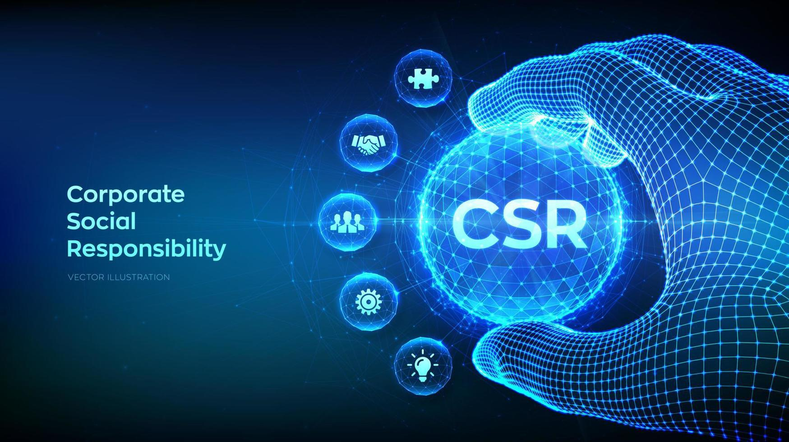

Our
VISION ?
- To build a smarter, more connected world:
- To solve real-world problems by delivering innovative and effective solutions:
- To engage in social service by providing free education and fostering aspirations:
Our vision is to create an interconnected future where technology enhances every aspect of daily life. By integrating AI, IoT, and advanced analytics, we aim to develop intelligent systems that streamline processes, bring people closer, and improve the overall quality of life for everyone.
We are committed to identifying and addressing pressing global challenges with cutting-edge technology and forward-thinking approaches. Our goal is to craft solutions that not only resolve present-day issues but also anticipate future needs, making life easier and more efficient for all.
We strive to reinvest our income and profits into initiatives that offer free education and mentorship. By fostering aspiration and learning, we aim to uplift underprivileged communities, creating opportunities for growth and success through education and skill development.

Social Initiatives Launched